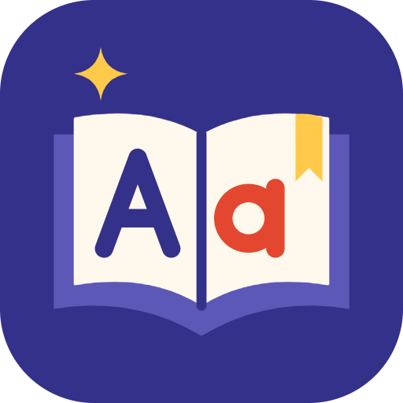

중학교 1, 2학년입니다. 화면의 메뉴와 해설은 한글이고, 학생이 직접 읽는 이야기와 보기 문장은 영어입니다. 문장을 일부러 짧게 써서, 해석을 옆에 붙이지 않아도 다음 장면이 보이게 했습니다. 문법 용어를 먼저 외우게 하지 않습니다. 학생은 그 문법이 들어 있는 문장을 읽고, 순서를 맞히거나 빈칸을 고릅니다. 영어가 길어서 포기하는 지점이 생기지 않게, 한 장면은 몇 문장 안에서 끝나게 했습니다.

그램테일기능 발표
이야기로 배우는 영문법
그램테일은 중학생이 문법을 고르면, 그 문법이 들어간 짧은 영어 이야기가 열리는 웹사이트입니다. 문제는 이야기 중간에 놓여 있고, 문제를 풀어야 다음 장면으로 넘어갑니다. 지문은 영어이고 질문은 한글입니다. 틀려도 이야기가 끊기지 않게, 해설과 비슷한 문제 한 번을 거친 뒤 결말까지 읽게 했습니다.
문법 이름은 처음 고르는 목차에만 있습니다. 이야기가 시작되면 우산, 열쇠, 사물함, 편지 같은 장면만 나옵니다. 학생은 「be동사의 정의를 쓰시오」가 아니라, 그 문장에 is가 맞는지 are가 맞는지를 고릅니다. 맞힌 문장은 사라지지 않고 이야기 본문이 됩니다. 그래서 문제를 푸는 일이 곧 다음 장면을 읽는 일입니다. 문법 공책과 이야기책이 따로 있지 않습니다.
문제 세 개면 한 편이 끝납니다. 첫 문제와 마지막 문제는 순서배열이고, 가운데 문제는 빈칸입니다. 틀리면 그 문제마다 비슷한 문제가 한 번만 더 붙습니다. 한 편은 짧고, 틀린 자리만 한 번 더 길어집니다. 세 문제를 모두 처음 시도에 맞히면 해설 없이 결말까지 바로 갑니다. 오래 붙잡고 있게 만들지 않았습니다.
고르는 순서, 영어 지문과 한글 질문, 순서배열과 빈칸, 틀렸을 때 해설이 나오는 방식, 점수는 첫 시도만 남긴다는 규칙을 차례로 설명합니다. 마지막에는 be동사 로맨스 「노란 우산」을 실제로 엽니다. 첫 문제에서 일부러 ①을 골라 오답과 해설, 비슷한 문제가 어떻게 붙는지 보여 드리고, 이어서 빈칸 문제까지 확인합니다.
그램테일
01 사용 순서
문법, 레벨, 장르. 세 번 고르면 한 편이 열립니다.
홈 화면에는 설명 문단을 길게 두지 않았습니다. 학생은 문법 이름을 누르고, 레벨을 누르고, 장르를 누릅니다. 주소도 같이 바뀝니다. be동사 1레벨 로맨스는 /be/1/romance 이고, 그 주소를 새로고침해도 같은 이야기가 다시 열립니다.
be동사, 일반동사, 과거시제, 비교급·최상급, 조동사입니다. 중학교 문법 전체를 한 사이트에 넣지 않았습니다. 짧은 이야기 안에서 여러 번 쓸 수 있는 다섯 개만 골랐습니다. 홈 화면에는 번호와 이름만 있습니다. 학년 표시도, 문법 설명 한 줄도 빼 두었습니다. 학생은 이름을 누르는 순간 바로 레벨 화면으로 갑니다. 문법의 뜻은 목차에서 읽고 들어가는 것이 아니라, 이야기 속 문장을 맞히면서 확인하게 했습니다.
레벨은 어려운 단어의 수가 아니라, 문장과 문장을 잇는 실마리의 종류입니다. 1은 First, Then, So, Finally처럼 순서를 가리키는 말이 문장 안에 분명합니다. 앞뒤를 읽으면 어느 문장이 먼저인지 바로 보입니다. 2는 it, she, However처럼 앞 문장을 받아야 순서가 결정됩니다. 3은 부정, 비교 대상, 조동사의 뜻을 같이 봐야 다음 문장이 이어집니다. 같은 문법도 레벨이 바뀌면 단서가 달라집니다.
선택지는 ROMANCE, MYSTERY, HORROR입니다. 화면에 한글 설명은 두지 않았습니다. 로맨스는 쪽지와 감사에서 멈추고, 키스나 고백 장면은 없습니다. 추리는 잃어버린 물건, 알리바이, 마지막으로 남는 단서입니다. 공포는 밤의 학교이지만 피가 나거나 누가 다치지 않습니다. 결말은 귀신이 아니라 타이머, 풍선, 꺼지지 않은 스위치처럼 설명이 되는 원인입니다. 장르만 바꿔도 같은 문법으로 다른 이야기를 읽을 수 있습니다.
그램테일
02 글과 질문
학생이 읽는 글은 영어이고, 묻는 말만 한글입니다.
도입, 장면과 장면 사이의 문장, 문제의 영어, 결말까지 모두 영어입니다. 길이를 짧게 가져가서 해석을 달지 않아도 장면이 보이게 했습니다. 대신 「무엇을 고르라」는 문장은 모의고사에서 보던 한글 그대로 두었습니다. 영어를 읽되, 과제가 무엇인지는 한글로 알게 하려는 구분입니다.
화면에 뜨는 말은 이것입니다. 「주어진 글 다음에 이어질 글의 순서로 가장 적절한 것을 고르시오.」 영어 문장 하나가 먼저 나오고, (A)(B)(C) 세 문장이 따라옵니다. 학생은 그 세 문장을 어떤 순서로 놓을지 다섯 개의 보기 중에서 고릅니다. 질문은 모의고사에서 보던 한글 그대로이고, 고르는 문장만 영어입니다. 순서를 맞히면 그 영어가 다음 장면이 됩니다.
가운데 문제의 말은 이것입니다. 「빈칸에 들어갈 말로 가장 적절한 것을 고르시오.」 영어 문장 한가운데 ____ 가 있습니다. 보기는 is, are, doesn't, went, more, must처럼 그 문법에서 실제로 갈리는 말입니다. 이야기와 상관없는 단어를 섞지 않았습니다. 빈칸을 채운 문장이 그대로 그 장면의 한 줄이 되므로, 학생은 단어를 맞히는 동시에 이야기를 한 줄 더 읽게 됩니다.
질문까지 영어로 두면, 문법을 모르기 전에 지시문에서 막힙니다. 지문까지 한글로 두면, 영어를 읽지 않고도 이야기를 따라가게 됩니다. 그래서 읽을 글은 영어, 시킬 말은 한글로 고정했습니다. 해설도 한글입니다. 맞힌 뒤에 왜 그 순서인지, 왜 그 단어인지를 모국어로 확인하고, 다음 영어 장면으로 돌아가게 했습니다. 영어를 읽는 부담과 과제를 이해하는 부담을 한곳에 몰지 않으려는 구분입니다.
그램테일
03 두 가지 문제
한 편에 순서배열 두 문제, 빈칸 한 문제입니다.
주어진 영어 문장 다음에 (A)(B)(C)가 있습니다. 보기는 다섯 개입니다. (A)(C)(B), (B)(A)(C), (B)(C)(A), (C)(A)(B), (C)(B)(A). (A)(B)(C) 그대로인 보기는 일부러 빼 두었습니다. 읽지 않고 첫 순서를 고르면 맞지 않게 하려는 장치입니다. 정답 순서로 놓은 문장이 바로 다음 장면이 됩니다. 문제는 단독으로 풀 수 있어야 하고, 맞힌 결과는 이야기를 이어 가야 합니다.
같은 이야기의 한 문장에서 문법 자리를 비웁니다. be동사면 is, are, am, isn't, aren't 중에서 고릅니다. 일반동사면 buys와 buy, doesn't와 don't가 갈립니다. 과거면 looked, went, did not이 나옵니다. 비교급은 longer, more dangerous, the most처럼 비교의 말이, 조동사는 can, can't, must, must not, should가 보기가 됩니다. 빈칸을 채운 문장이 그 장면의 영어가 됩니다.
처음에는 문장과 문장의 순서를 읽고, 가운데에서는 단어 하나를 고르고, 마지막에 다시 순서로 장면을 닫습니다. 순서만 세 번 반복하지 않으려고 가운데를 빈칸으로 두었습니다. 어느 쪽이든 맞힌 영어는 이야기 본문에 남고, 세 문제가 끝나면 그 문장들이 한 편의 짧은 이야기로 이어 붙여집니다.
그램테일
04 틀렸을 때
해설이 먼저 나오고, 비슷한 문제는 한 번만 더 나옵니다.
틀린 학생을 같은 문제 앞에 반복해서 세우지 않았습니다. 왜 틀렸는지를 먼저 읽고, 같은 문법의 다른 문장으로 한 번만 확인합니다. 그 한 번도 연습입니다. 이야기의 점수에 남는 것은 첫 번째 선택뿐입니다.
틀린 직후, 정답만 가리고 끝내지 않습니다. 순서 문제면 어느 문장이 먼저인지, 대명사가 누구를 받는지, So가 왜 마지막인지를 한글로 씁니다. 빈칸이면 왜 is인지, 왜 doesn't인지, 왜 must not인지를 씁니다. 해설은 그 문장에 나온 이유를 말하고, 다른 이야기의 단어를 끌어오지 않습니다. 학생은 이유를 읽고 나서야 다음 문제로 갑니다.
해설 바로 아래에 비슷한 문제가 열립니다. 문법과 형식은 같고 장면만 다릅니다. 우산의 is가 쪽지의 is가 되고, 골목의 more dangerous가 다른 비교 문장으로 바뀝니다. 같은 문제를 맞힐 때까지 반복시키지 않습니다. 기회는 정확히 한 번입니다. 여기서 맞히면 재도전 성공으로 남고, 이야기의 첫 점수에는 들어가지 않습니다.
재도전마저 틀리면 그 문제의 해설을 보여주고 다음 장면으로 넘깁니다. 결말까지 못 가면 문법은 남고 이야기는 끊깁니다. 막힌 자리만 표시하고, 편은 끝까지 읽게 했습니다. 세 문제 중 하나를 두 번 틀려도 나머지 장면과 결말은 열립니다. 틀린 학생이 이야기 밖에 남지 않게 하려는 규칙입니다.
그램테일
05 한 편의 끝, 그리고 분량
세 문제가 끝나면 영어가 한 편으로 남고, 그 장르에 완독이 붙습니다.
첫 시도로 몇 개를 맞혔는지가 먼저 나옵니다. 세 문제를 모두 처음에 맞히면 그 사실을 말하고, 아니면 첫 시도 개수를 보여 줍니다. 재도전으로 맞힌 자리는 연습으로 남고 첫 점수와 섞지 않습니다. 그 아래에는 방금 읽은 영어가 도입부터 결말까지 이어지고, 그 문법에서 가져갈 설명 세 줄이 다시 나옵니다. 문제를 푸는 동안 흩어져 있던 문장이 여기서 한 편의 영어로 모입니다.
한 편을 끝내면 그 문법, 그 레벨, 그 장르에 완독이 붙습니다. 브라우저에 저장되므로 다음에 같은 장르 칸에 다시 들어와도 이미 읽었다는 표시가 남아 있습니다. 다른 장르는 아직 열리지 않은 이야기입니다. 같은 레벨의 로맨스를 끝냈다고 미스터리가 끝난 것은 아닙니다. 표시는 그 조합 하나에만 붙습니다.
문법 5개, 레벨 3단계, 장르 3가지를 모두 곱하면 45편입니다. 편마다 본문제 3개, 틀렸을 때를 대비한 비슷한 문제 3개가 있어서 문항은 최대 270개입니다. 인물은 미나, 준, 하린, 도윤, 서아, 그리고 선생님들입니다. 같은 학교와 같은 복도를 쓰되, 문법과 장르가 바뀌면 사건이 바뀝니다. 형식은 같아서, 발표에서는 한 편만 열어도 사이트의 전부가 보입니다.
그램테일
06 시연 · 노란 우산
be동사, LEVEL 1, ROMANCE. 일부러 한 번 틀려 보겠습니다.
월요일에 비가 오고, 2반 교실 문 앞에 노란 우산이 하나 있습니다. 준은 그 우산이 전학생 미나의 것인지 확인하려 합니다. 이 편의 영어는 전부 그 장면에서 나옵니다.
홈에서 be동사를 누릅니다. LEVEL 1을 누릅니다. ROMANCE를 누릅니다. 제목은 「노란 우산」, 영어 제목은 The Yellow Umbrella입니다. 화면 위의 영어 두 문장이 이야기의 시작입니다. 주소는 /be/1/romance 가 되고, 그 주소에서 새로고침해도 같은 편이 다시 열립니다. 이 한 편으로 사이트의 고르기, 문제, 오답, 빈칸을 모두 볼 수 있습니다.
주어진 글은 A yellow umbrella is at the classroom door. 입니다. ① (A)–(C)–(B)는 오답입니다. 정답 확인을 누르면 해설이 열리고, 정답은 ② (B)–(A)–(C)라고 나옵니다. 바로 아래에 쪽지 이야기로 바꾼 비슷한 문제가 생깁니다. 일부러 틀려 보는 이유는, 맞았을 때만 보면 해설과 재도전이 화면에 나오지 않기 때문입니다.
다음 장면으로 가면 미술실입니다. 문장은 Mina ____ by the window in the art room. 보기는 am, isn't, aren't, is, are입니다. 주어 Mina가 한 사람이므로 정답은 is입니다. 이 한 편으로, 영어 지문, 한글 질문, 순서배열, 오답 뒤의 해설, 한 번의 재도전, 그리고 빈칸까지 모두 확인할 수 있습니다.
그램테일
07 정리
영어를 읽고, 한글로 묻고, 맞히면 다음 장면으로 갑니다.
도입과 장면과 결말은 짧은 영어입니다. 해석을 옆에 붙이지 않은 대신, 한 문장을 길게 쓰지 않았습니다. 학생이 읽는 글은 전부 영어이고, 그 영어가 맞힌 순서대로 한 편의 이야기가 됩니다.
순서배열과 빈칸의 질문 문장은 한글입니다. 모의고사에서 보던 말 그대로라서, 영어 지시문 때문에 문제가 막히지 않습니다. 시킬 말은 한글, 고를 문장은 영어입니다.
오답은 해설로 이어지고, 같은 문법의 다른 문장이 한 번 더 나옵니다. 점수는 첫 시도만 남고, 재도전은 연습입니다. 두 번째도 틀리면 그 해설을 보여주고 결말로 갑니다.
한 편이 끝나면 영어가 순서대로 이어지고, 그 장르에 완독이 붙습니다. 문법 5개, 레벨 3단계, 장르 3가지, 이야기 45편입니다. 형식은 같아서 한 편을 보면 나머지가 보입니다.
그램테일은 문법 이름을 외우는 앱이 아니라, 그 문법이 들어 있는 문장으로 다음 장면을 여는 사이트입니다. 맞히면 다음 장면입니다. 들어 주셔서 감사합니다.